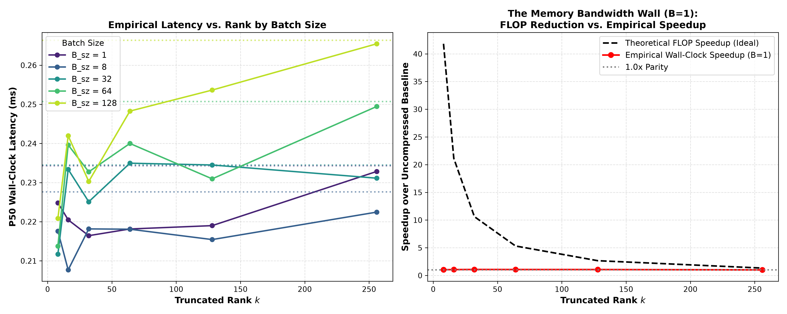
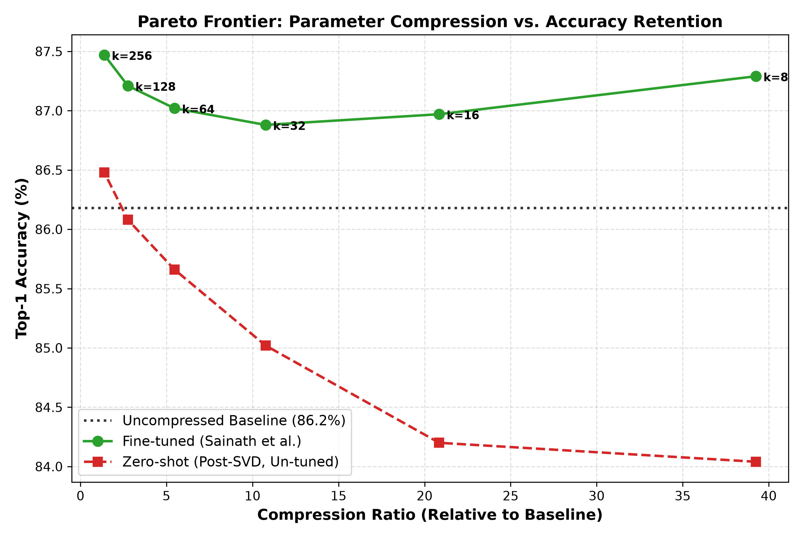
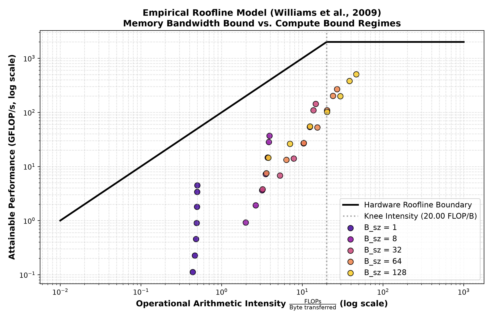
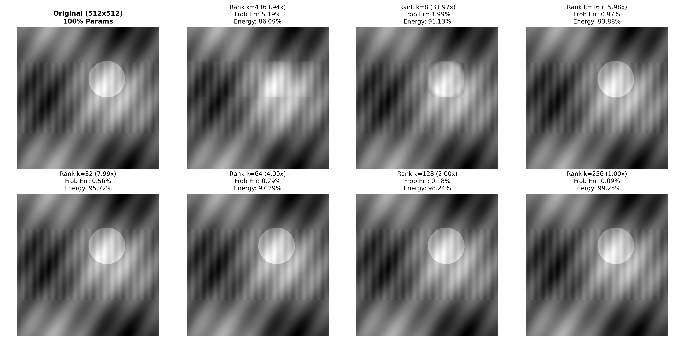

Quantifying the divergence between theoretical FLOP reductions and actual wall-clock execution time on modern accelerators, empirically modeling the LLM KV-cache memory wall.

What this proves: The dashed black line is theoretical speedup based on FLOP reduction (~22× for k=8). The red line is actual wall-clock speedup at Batch Size = 1. It sits below 1.0× (a slight slowdown!). Only when batch size reaches B=128 (green line) does the hardware transition into compute-bound scaling (2.81× speedup).

What this proves: Immediate post-SVD truncation (red dashed) causes a mild accuracy dip (to 84.04% at k=8). However, fine-tuning for 3 epochs with AdamW and cosine annealing (green curve) completely recovers accuracy, reaching 87.29%—exceeding the uncompressed baseline (86.18%).

What this proves: Maps operational arithmetic intensity (FLOPs/Byte) against achieved throughput. At B=1, operations lie on the memory-bandwidth slope (< 0.50 FLOP/Byte). As batch size scales to B=128, operational intensity increases to 38.4 FLOP/Byte, crossing the machine balance point into the horizontal compute ceiling.

What this proves: A 512×512 matrix decomposed across ranks k ∈ {4, 8, 16, 32, 64, 128, 256}. At rank k=16, the image achieves a 15.98× compression ratio while retaining 93.88% cumulative singular value energy and <1% relative Frobenius error.
| Configuration | Total Parameters | Compression Ratio | Checkpoint Size | Zero-Shot Acc | Fine-Tuned Acc | Net Retention |
|---|---|---|---|---|---|---|
| Baseline (Dense) | 1,462,538 | 1.00× | 5.85 MB | 86.18% | 86.18% | Ref |
| Rank k=8 | 37,258 | 39.25× | 146 KB | 84.04% | 87.29% | +1.11% |
| Rank k=16 | 70,154 | 20.85× | 274 KB | 84.20% | 86.97% | +0.79% |
| Rank k=32 | 135,946 | 10.76× | 531 KB | 85.02% | 86.88% | +0.70% |
| Rank k=64 | 267,530 | 5.47× | 1.02 MB | 85.66% | 87.02% | +0.84% |
| Rank k=128 | 530,698 | 2.76× | 2.02 MB | 86.08% | 87.21% | +1.03% |
| Rank k=256 | 1,057,034 | 1.38× | 4.03 MB | 86.48% | 87.47% | +1.29% |
| Batch Size | Baseline Latency | Rank k=8 | Rank k=16 | Rank k=32 | Rank k=64 | Rank k=128 | Hardware Regime |
|---|---|---|---|---|---|---|---|
| B = 1 | 0.444 ms | 0.498 ms 0.89× | 0.501 ms 0.89× | 0.500 ms 0.89× | 0.528 ms 0.84× | 0.517 ms 0.86× | Memory-Bound (Memory Wall) |
| B = 8 | 0.452 ms | 0.421 ms 1.07× | 0.404 ms 1.12× | 0.406 ms 1.11× | 0.409 ms 1.11× | 0.417 ms 1.09× | Transition Regime |
| B = 32 | 0.568 ms | 0.407 ms 1.39× | 0.501 ms 1.13× | 0.438 ms 1.30× | 0.441 ms 1.29× | 0.449 ms 1.26× | Transition Regime |
| B = 64 | 0.735 ms | 0.410 ms 1.79× | 0.439 ms 1.67× | 0.441 ms 1.67× | 0.457 ms 1.61× | 0.538 ms 1.37× | Compute-Bound (FLOP scaling) |
| B = 128 | 1.184 ms | 0.421 ms 2.81× | 0.457 ms 2.59× | 0.466 ms 2.54× | 0.480 ms 2.47× | 0.784 ms 1.51× | Compute-Bound (FLOP scaling) |